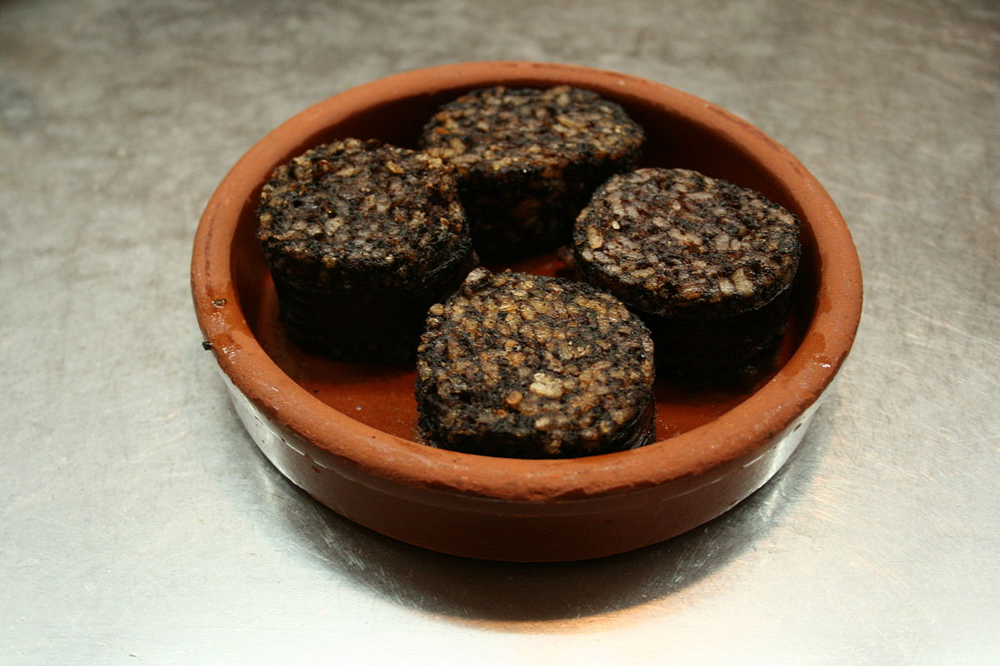

| Autor: Alejandro Rivera Casaseca Fecha:20/01/2021 |
Burgos |
||||||||
| Inicio |
|
||||||||
| Ávila | |||||||||
| León | |||||||||
| Palencia | |||||||||
| Salamanca | |||||||||
| Segovia | |||||||||
| Soria | |||||||||
| Valladolid | |||||||||
| Zamora | |||||||||
| Pagina de contacto | |||||||||
LocalizaciónLocalidadesGrandes ciudades : Burgos, Miranda de Ebro, Aranda de Duero, Briviesca, Medina de Pomar, Villarcayo de Merindad de Castilla la Vieja, Valle de Mena, Lerma, Roa, Alfoz de Quintanadueñas, Salas de los Infantes, Villagonzalo Pedernales, Belorado, Arcos de la Llana, Espinosa de los Monteros, Quintanar de la Sierra, Melgar de Fernamental, Villadiego, Merindad de Río Ubierna, Villalbilla de Burgos, Ibeas de Juarros, Condado de Treviño, Cardeñadijo, Pradoluengo, Cardeñajimeno, Oña, Sasamón, Valle de Tobalina, Huerta de Rey, Quintanilla Vivar, Castrojeriz, Castrillo del Val, Trespaderne, Tardajos, Fuentespina, Merindad de Montija, Palacios de la Sierra, Villalba de Duero, Modúbar de la Emparedada y Hontoria del Pinar. Mas informaciónGeografíaCon una superficie de 14269 km², la Meseta propiamente dicha abarca sólo la mitad SO. de la provincia, región de páramos y llanuras, constituida por sedimentos terciarios de la depresión del Duero, disecados por este río y sus afluentes. De la Cuenca del Duero forma parte La Sierra, básicamente del partido de Salas de los Infantes, las Comaracas de Villadiego y de Castrojeriz, el Alfoz de Burgos en el curso del Arlanzón, las Tierras de Lerma regadas por el Arlanza y la Ribera del Duero, a uno y otro lado de Aranda de Duero. El valle del Ebro por su parte ocupa casi un tercio de la superficie provincial. En esta zona se encuentran básicamente las Merindades, distribuidas en torno a Medina de Pomar y Villarcayo, el páramo de la Lora con Sedano como capital de importancia histórica reconocida, la fértil cuenca de la Bureba con centro en Briviesca, Miranda de Ebro y Treviño. El resto de la provincia participa de los dos sistemas montañosos que lo enmarcan:
Entran pues en la provincia tres importantes unidades geográficas: la España húmeda, el valle del Ebro y la Meseta, lo que hace de Burgos una encrucijada de varios paisajes; se suceden altas montañas, como las de la sierra de la Demanda, picos de Urbión (2.253 m), montes de Oca (996 m.), Peñas de Cervera (1.413 m) o sierra de Covarrubias, altas mesetas o páramos, desfiladeros (Pancorbo), corredores (La Bureba), valles y campiñas fluviales (como los de Mena, regado por el Cadagua, ribera del Ebro, Duero, Arlanza, Arlanzón y Pisuerga); tiene una compleja y rica diversidad morfológica y de relieve en la que se alternan los materiales calizos y arcillosos. Volver al principioHistoriaEsta provincia es la llamada Cabeza de Castilla porque fue donde se fundó el Reino de Castilla. Su capital, dispone de un importante patrimonio histórico-artístico entre el que se encuentra su catedral. Aparte de Burgos, existen dos núcleos industriales importantes: el de Aranda de Duero y el de Miranda de Ebro, este último, el segundo más importante de la provincia después de la capital. Tras el reciente descubrimiento e investigación de los Cartularios de Valpuesta, de discutidísima autenticidad, la provincia de Burgos entra en lid con la Comunidad Autónoma de La Rioja por ser considerada como la Cuna del Castellano. El estatuto de autonomía de Castilla y León los menciona en su articulado como uno de los textos con las huellas más primitivas de la lengua castellana. La provincia de Burgos, en el sentído político actual del término, nace como todas ellas en la división provincial de 1833 de Javier de Burgos, existiendo otras estructuras con sede en esta ciudad. A continuación se exponen distintas entidades que han tenido como cabeza la ciudad de Burgos, algunas de las cuales llevaban por ese motivo su nombre. Volver al principioCulturaEn Burgos hay muchas actividades culturales para hacer, como visitar monumentos, iglesias, sus numerosos municipios, mencionados antes, o probar su gastronomía, etc. En el siguiente enlace, podrá encontrar todas las actividades culturales que podrá realizar en su visita a Burgos. Actividades culturales de Burgos Volver al principio NaturalezaEstos son los 10 mejores parajes naturales de la provincia de Burgos: Cascada de Orbaneja, Salto del Nervión, Parque de la Isla, Paseo del Espolón, Lagunas de Neila, Cascadas de Tobera, Cascadas de El Peñón, Cascadas de Ojo Guareña, Ermita de San Bernabe, Cueva Palomera Si desea conocer más sobre estos parajes, o sobre otros que no se han mencionado, puede acceder a ellos a través de este enlace: Volver al principioTradicionesAlgunas tradiciones de la provincia de Burgos son: Batalla de Atapuerca, Danza del Escarrete, El cronicón de Oña, Fiesta de Capitán, Fiesta de la tabera Este es un vídeo de la Batalla de Atapuerca: Volver al principio OtrosGastronomíaLa Morcilla de Burgos, el Queso de Burgos, la Morcilla de Aranda, el Lechazo asado (cordero lechal) y la torta de Aranda, son ejemplos gastronomía de la provincia La siguiente imagen es un ejemplo de gastronomía de la provincia de Burgos, es la morcilla de Burgos Volver al principio |